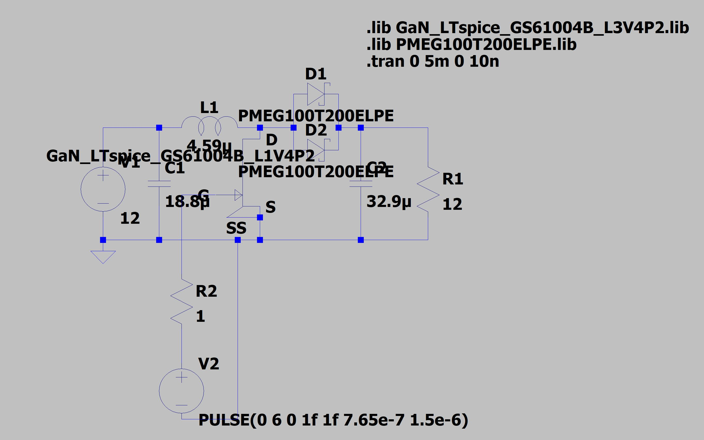

Intro
I am very interested in power converters, and this project really taught me a lot.
Problem/Inspiration
This is a design project for my power electronics class in college.
The Process
The plan was simple:
1. Define the specifications (current ripple, voltage ripple, switching frequency, etc.).
2. Select the most optimal inductor and capacitor from a list.
3. Simulate the optimize the converter in LTSpice.
4. Build the boost converter.
5. Benchmark it.
LTSpice model:

Final Specs:
- 93.4% efficient at 50W output power (12V -> 24V)
- 666.7kHz switching frequency
- Less than 1% inductor current ripple
- Less than 1% output voltage ripple
If interested, here is the full report:
Report
Remarks
This was by far the most interesting school project I've ever done. Not only do I get to apply the skills I've learned,
but I also get to mess around with a really high end MOSFET! The inductor is not board-soldered because there needed
to be wires so a current clamp could go around it to measure inductor current. The efficiency recorded at the specified
power level of 50W is 93.4%, which is pretty good already, but I think replacing the diodes with another GaN MOSFET and
making it a synchronous converter should get us a 2-3% efficiency boost. Also, the inductor will not be floating....